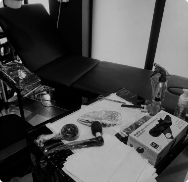
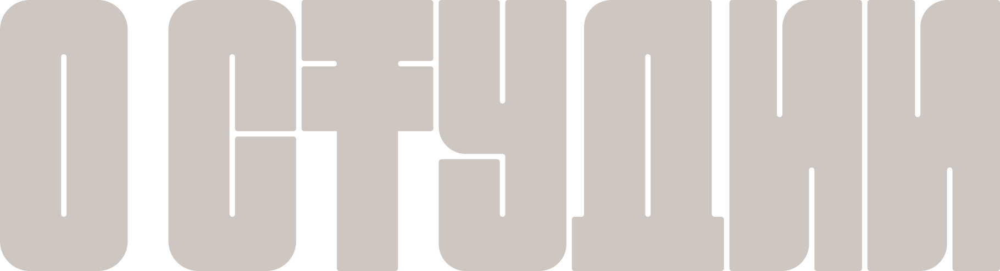
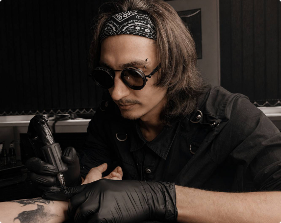
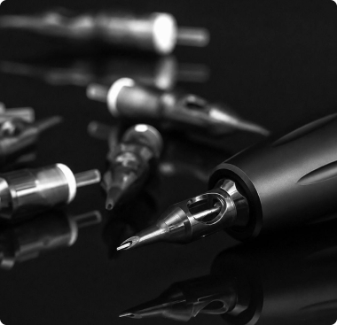
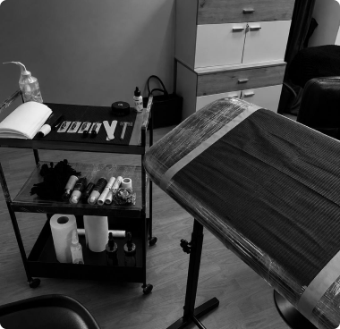
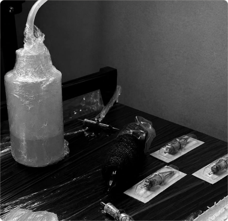
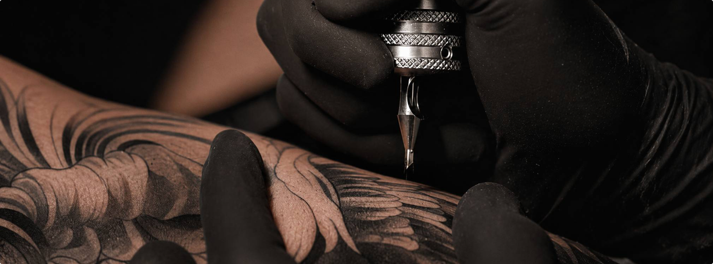
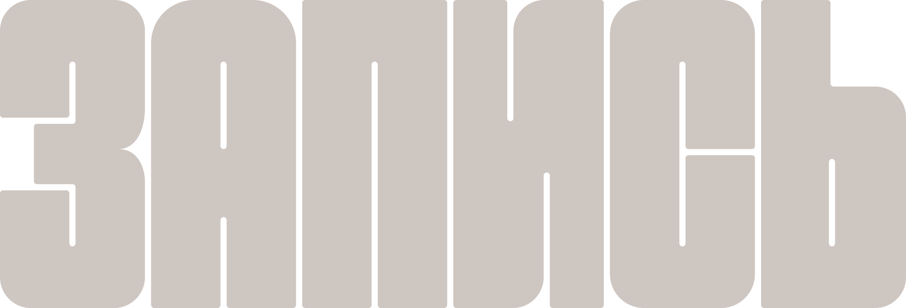
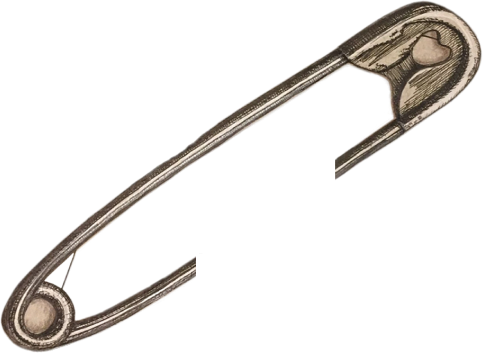
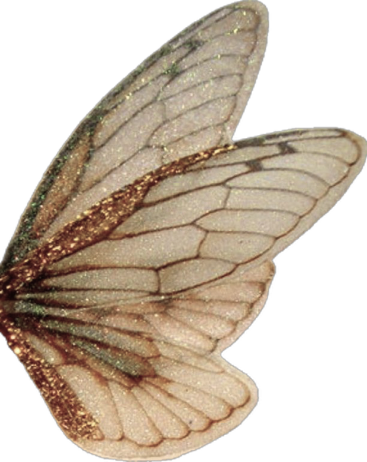

01 Чистое рабочее место
Рабочая зона тщательно подготавливается перед каждым клиентом, чтобы поддерживать чистоту на протяжении всего сеанса.



Тату-студия в Иваново
Татуировки по авторским эскизам.
Для меня татуировка начинается не с рисунка, а с идеи. Я учитываю анатомию, расположение и масштаб, чтобы работа естественно смотрелась на теле и хорошо сохранялась со временем.
Основное направление — тонкая графика и небольшие татуировки. Я работаю с индивидуальными эскизами, адаптируя каждый под человека и выбранное место.
Мне важно не просто перенести изображение на кожу, а продумать всю работу целиком: композицию, линии, детали и посадку. Поэтому перед сеансом мы обсуждаем идею и вместе находим подходящее решение.


Рабочая зона тщательно подготавливается перед каждым клиентом, чтобы поддерживать чистоту на протяжении всего сеанса.

Иглы, картриджи и другие расходные материалы используются только один раз и вскрываются непосредственно перед сеансом.

Рабочие поверхности и оборудование тщательно обрабатываются и дезинфицируются перед каждым клиентом для полной безопасности.

Все поверхности и оборудование, которые мастер использует во время работы, защищаются одноразовыми барьерными материалами.
В NEO INK, каждая татуировка начинается с вашей идеи. Мы дорабатываем её вместе с вами и создаём эскиз, который подходит именно вам: по стилю, характеру и тому, как он будет смотреться на теле.
Для нас важно, как татуировка выглядит не только на эскизе, но и на теле. Мы подбираем размер и расположение так, чтобы рисунок хорошо смотрелся с учётом анатомии и естественных линий тела.
Необязательно заранее знать, какой именно должна быть татуировка. Можно прийти с референсом, фотографией, рисунком или просто рассказать, что вам нравится. Мы поможем собрать мысли и понять, в какую сторону двигаться.
Нам важно, чтобы в студии вам было спокойно и комфортно. Мы всегда расскажем, как всё проходит, ответим на вопросы и дадим время освоиться. А к чистоте и безопасности относимся без компромиссов.




КОНТАКТЫ